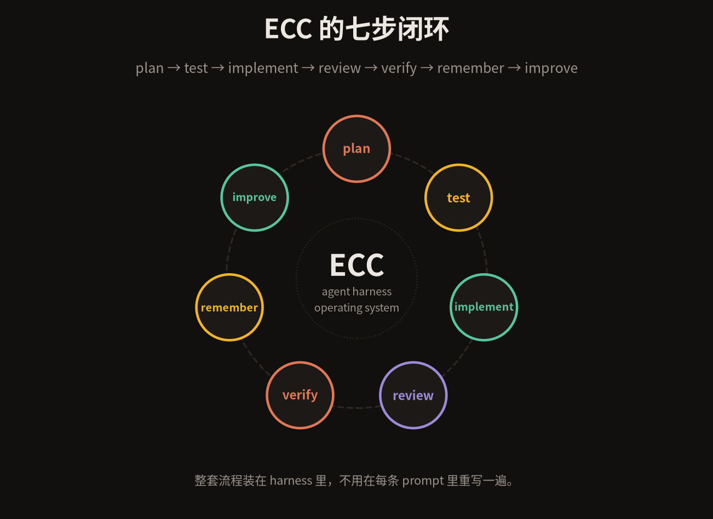
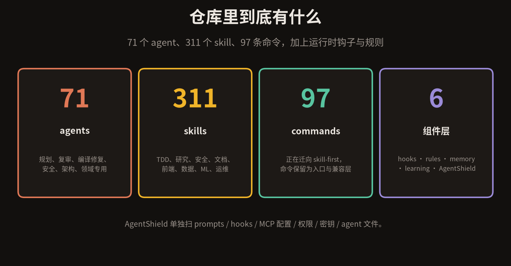
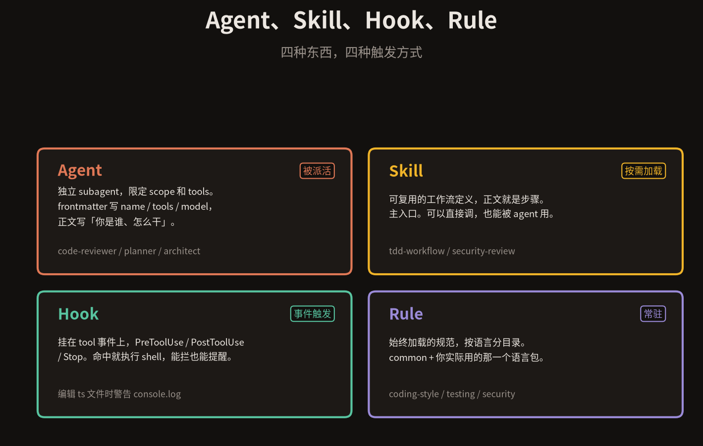
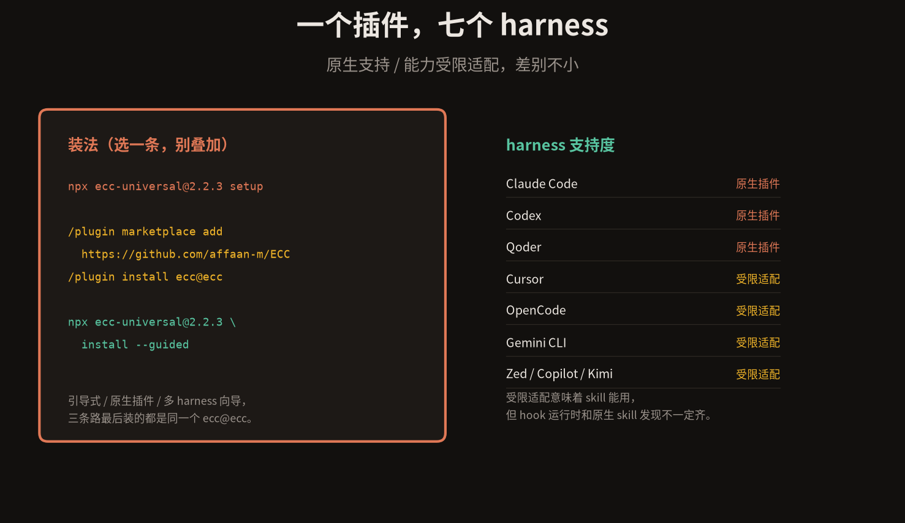

ECC 这个名字来自 Everything Claude Code。不过它现在不太爱用这个说法了，仓库第一行改成了：the agent harness operating system。
一个 GitHub 仓库里塞着 71 个 agent、311 个 skill、97 条命令，外加 hooks、rules、memory 和一整套持续学习机制。
它想解决的不是「怎么让模型写出代码」，是「怎么让 agent 记得住、不跑偏、下次比这次好一点」。这两件事难度差很远。
01
它到底是什么
先把 harness 这个词说清楚。模型负责写代码，harness 负责给模型配工具、配记忆、配流程、配护栏。同一个模型装进不同的 harness，干活的水平能差一个档。
ECC 对 harness 的判断很直接：里面最贵的资源不是 prompt，是上下文窗口。README 里有一句被反复引用的话——
Optimize the context window. Persist everything else.
意思是：上下文留给眼前这一步，其余全部落盘。所以它没有做成一个万能超级 prompt，而是拆成七个步骤组成的一条闭环，整套装在 harness 里。plan → test → implement → review → verify → remember → improve。
每一步有自己的 agent 和 skill。上一步的结论写进文件，下一步读文件继续跑。上下文不跨步骤累积，记忆跨步骤传递。这就是它和「一个大 prompt 干到底」的根本区别。

七个步骤，一条闭环，装在 harness 里。
02
仓库里到底有什么
数量先摆出来，因为它的规模确实不常见。

71 个 agent、311 个 skill、97 条命令，加六个组件层。
71 个 agent 按职责分：规划、复审、编译修复、安全、架构，还有一堆领域专用的。
311 个 skill 是主入口。TDD、研究、安全、文档、前端、数据、ML、运维，基本上你能想到的环节都有一个现成的工作流。
97 条命令正在往 skill-first 迁。也就是说命令层现在更像入口和兼容层，真正的逻辑写在 skill 里。
剩下的六个组件层是 hooks、rules、memory、continuous learning 和 AgentShield。AgentShield 是独立的一个扫描器，专门看 prompts、hooks、MCP 配置、权限、密钥和 agent 文件里有没有问题。
有个容易踩的坑：它的三套标识不能混着用。affaan-m/ECC 是 GitHub 仓库，ecc@ecc 是 Claude 插件标识，ecc-universal 是 npm 包名。文档里这三个名字来回换，装的时候各用各的。
03
四种东西，四种触发方式
看着有几百个文件，其实骨架只有四种东西。区别不在它们写什么，在于什么时候被加载。

Agent 被派活、Skill 按需加载、Hook 事件触发、Rule 一直在线。
Agent 是被派活的。一个独立 subagent，限定了 scope 和 tools。frontmatter 里写 name、tools、model，正文写「你是谁、怎么干」。code-reviewer、planner、architect 都是这种。
Skill 是按需加载的。一个可复用的工作流定义，正文就是步骤。它是主入口——你可以直接调，agent 也能调。tdd-workflow 强制先写失败测试，security-review 按清单过一遍，都属于这一类。
Hook 是事件触发的。挂在 tool 事件上，PreToolUse、PostToolUse、Stop。命中就执行 shell，能拦截也能提醒。比如改 ts 文件时警告 console.log，或者 commit 前跑一次检查。
Rule 是常驻的。始终加载的规范，按语言分目录。官方建议只挂 common 加你实际用的那一个语言包——十个语言包全开，纯烧上下文。
这四种东西一组合，就是前面那条七步闭环。plan 用 planner agent 跑一个规划 skill，implement 阶段有 hook 盯着，全程 rule 约束风格，remember 把结论写进 memory。
04
怎么装
三条路，选一条。不要叠加。
# 路径 A · 引导式安装（最稳） npx ecc-universal@2.2.3 setup # 路径 B · Claude Code 原生插件 /plugin marketplace add https://github.com/affaan-m/ECC /plugin install ecc@ecc # 路径 C · 多 harness 向导 npx ecc-universal@2.2.3 install --guided

七个 harness，原生和受限适配差别不小。
叠加装是新手最容易犯的错。同一个 harness 装两次，skills、commands、hooks 会重复注册，行为开始变得莫名其妙，还很难查。
装完先确认状态：
npx ecc-universal list-installed # 看装了什么 npx ecc-universal doctor # 体检 npx ecc-universal repair # 坏了修 npx ecc-universal uninstall --dry-run # 卸之前先看会删掉什么
harness 支持度要提前看清。Claude Code、Codex、Qoder 是原生插件，全套能力都在。Cursor、OpenCode、Gemini CLI、Zed、Antigravity、Qwen、Hermes、OpenClaw、Kimi、CodeBuddy、JoyCode、Copilot 属于受限适配——skill 能用，但 hook 运行时和原生 skill 发现不一定齐。挑 harness 之前先比对这张表。
当前版本 2.2.3，2026-10-01 发布。v2.0.0 是它正式定义为 Agent Harness Operating System 的那一版。
05
怎么用
装完别急着背 311 个 skill。记住六个入口就够跑起来了。
/ecc:plan 先规划，把任务拆开。tdd-workflow 强制你先写一个失败的测试。/code-review 换一个新的上下文来复审，避免自己审自己。
写错了用 /build-fix 修编译错误，代码肥了用 /refactor-clean 清冗余。/context-budget 能看当前上下文还剩多少，这是它最实用的一条诊断命令。
跨会话接着干，用 /save-session 存，/resume-session 读。上线前跑一遍 /security-scan。
最短的一次完整用法长这样：
/ecc:plan 给登录接口加限流 # 看完计划，确认它没理解偏 tdd-workflow # 它先写一个会失败的测试，再让实现追着测试跑 /code-review # 换一个 agent 复审 diff
四步跑完，remember 会把这次的决策写进 memory，improve 会把反复出现的做法沉淀成 skill。下次同一个项目再用，起点已经不一样了。这是它和普通 prompt 模板最实质的差别。
还有一点要分清。ECC 本体是 MIT 协议，永久开源。ECC Pro 是另一个东西，托管的 GitHub App，商业产品，不要看混。
值不值得装？如果你只偶尔用 agent 改几行代码，它有点重。但当你的项目要连续几天让 agent 参与，靠上下文窗口硬记是不行的——那时候一条能把记忆落盘的闭环，比多写几个 prompt 有用得多。
上下文留给眼前这一步，其余全部落盘。这条原则，比任何一个 skill 都值得记住。
仓库在 github.com/affaan-m/ECC。